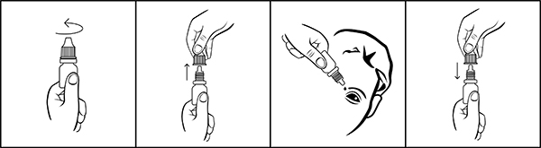
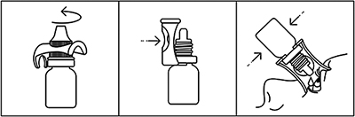

|
 |
| ОФТАРИНТ (OFTARINT) adenosine, nicotinamide, cytochrome C капли глазные | ||||||||||
|
Клинико-фармакологическая группа: Препарат, применяемый при катаракте Номер и дата регистрации: ЛП-006058 от 24.01.20 Код ATX: S01XA |
Владелец регистрационного удостоверения: зарегистрировано и произведено Представительство: | |||||||||
Форма выпуска, состав и упаковка ◊ Капли глазные в виде прозрачного раствора красного цвета.
Вспомогательные вещества: сорбитол - 10 мг, натрия дигидрофосфата дигидрат - 4.415 мг, натрия гидрофосфата дигидрат - 2.847 мг, натрия сукцината гексагидрат - 1 мг, бензалкония хлорид - 0.04 мг, вода д/и - до 1 мл. 10 мл - флаконы-капельницы из полиэтилена высокого давления× (1) - пачки картонные. × с упорным устройством или без него. | ||||||||||
| ||||||||||
Описание препарата основано на официально утвержденной инструкции по применению и утверждено компанией-производителем для издания 2023 г. | ||||||||||
Фармакологическое действие |
Фармакокинетика |
Показания |
Режим дозирования |
Побочное действие |
Противопоказания |
Беременность и лактация |
Особые указания |
Передозировка |
Лекарственное взаимодействие |
Условия хранения и сроки годности |
Условия реализации
Фармакологическое действие
Комбинированный препарат, улучшающий энергетический метаболизм хрусталика. Цитохром С играет важную роль в биохимических окислительно-восстановительных процессах в тканях глазного яблока и является антиоксидантом. Аденозин - предшественник АТФ, принимает участие в метаболических процессах хрусталика. Никотинамид стимулирует синтез никотинамид-динуклеотида (НАД), кофактора дегидрогеназ. Фармакокинетика
При местном применении цитохром С не всасывается в системный кровоток, в организме метаболизируется полностью. Распад цитохрома С идет по тем же метаболическим путям, что и расщепление аминокислот, а гем, расщепленный до билирубина, выводится с желчью. Аденозин свободно проходит через роговицу. T1/2 аденозина из плазмы составляет менее 1 мин, он метаболизируется практически во всех тканях с образованием инозина, ксантина и урата, свободно выводящихся с мочой. Рибоза, которая является составным элементом аденозина, метаболизируется до глицеральдегид-3-фосфата, затем до пирувата и сгорает в цикле Кребса. Никотинамид частично метаболизируется до никотиновой кислоты. Оба эти соединения метилируются в N-метилникотинамид, который в дальнейшем распадается в печени. Метаболиты и неизмененный никотинамид экскретируются мочой. Режим дозирования
Местно, по 1-2 капли в конъюнктивальный мешок 3 раза/сут. Порядок работы с флаконом  1. Вращающими движениями против часовой стрелки открыть флакон и снять колпачок 2. Осторожно, не касаясь пальцами наконечника флакона, перевернуть флакон, зафиксировать между большим и указательным пальцами одной руки. 3. Запрокинуть голову назад, расположить наконечник флакона над глазом и указательным пальцем другой руки оттянуть нижнее веко вниз. Слегка надавить на флакон и закапать необходимое количество препарата в конъюнктивальный мешок глаза. Необходимо избегать контактов наконечника открытого флакона с поверхностью глаза и руками. 4. После использования надеть колпачок на флакон и закрыть вращающими движениями по часовой стрелке. Порядок работы с упором (при наличии)  1. Достать упор и флакон из пачки. 2. Открыть флакон с помощью упора. 3. Закрепить упор на горлышке флакона. 4. Установить упор на веко так, чтобы капельница находилась напротив глазного яблока, закапать необходимое количество препарата. 5. Снять упор с горлышка флакона. Закрыть флакон крышкой. После вскрытия флакона препарат можно использовать в течение 1 месяца. По истечении этого срока препарат следует выбросить. При видимых повреждениях флакона применять препарат не следует. Побочное действие
Со стороны органа зрения: кратковременное жжение и пощипывание глаз, аллергический конъюнктивит, контактный дерматит. Системные побочные эффекты наблюдаются крайне редко. Могут наблюдаться кратковременные тошнота, артериальная гипотензия, головокружение и одышка. Никотиновая кислота обладает сосудорасширяющим действием и может вызывать ощущение жара, обмороки и ощущение пульсации в висках. Противопоказания
Применение при беременности и кормлении грудью
Достаточного опыта по применению препарата при беременности и в период грудного вскармливания нет. Возможно применение препарата для лечения при беременности и в период грудного вскармливания, если ожидаемый лечебный эффект для матери оправдывает потенциальный риск для плода и ребенка. Особые указания
Бензалкония хлорид, который часто используется в офтальмологических препаратах в качестве консерванта, может вызвать точечную кератопатию и/или токсическую язвенную кератопатию. Поскольку препарат содержит бензалкония хлорид, необходим тщательный мониторинг в случае частого или длительного применения у пациентов с синдромом "сухого" глаза или в случаях повреждения роговицы. Бензалкония хлорид может изменить цвет мягких контактных линз. Необходимо вынимать мягкие контактные линзы перед применением препарата и устанавливать их снова через 15 мин после закапывания. Влияние на способность к управлению транспортными средствами и механизмами Пациенты, у которых после закапывания препарата появляется кратковременное раздражение глаз, не должны управлять автомобилем, работать с техникой, станками или каким-либо другим оборудованием, требующим хорошей остроты зрения сразу после применения глазных капель. Лекарственное взаимодействие
Не выявлено клинически значимого взаимодействия с другими лекарственными средствами. |
||||||||||
Вернуться наверх |
||||||||||
Copyright © Справочник Видаль «Лекарственные препараты в России», Москва, Россия